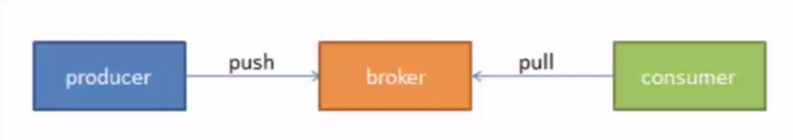

Kafka是一种分布式的，基于发布/订阅的消息系统。主要设计目标如下：
以时间复杂度为O(1)的方式提供消息持久化能力，即使对TB级以上数据也能保证常数时间复杂度的访问性能。 高吞吐率。即使在非常廉价的商用机器上也能做到单机支持每秒100K条以上消息的传输。 支持Kafka Server间的消息分区，及分布式消费，同时保证每个Partition内的消息顺序传输。 同时支持离线数据处理和实时数据处理。 Scale out：支持在线水平扩展。
1.jdk 1.7.0 2.zookeeper-3.4.7 3.服务器三台：192.168.100.30 192.168.100.31 192.168.100.32
10.0.1.15x,10.0.1.15x,10.0.1.15x,10.0.1.15x

flume java kafka awk storm spark redis linux zookeeper hive maven shell docker mysql datahole scala
Copyright © 2015 Powered by MWeb, Theme used GitHub CSS.